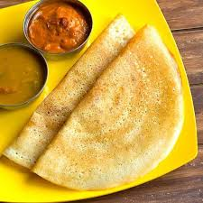

Dosai

Description
Dosa is a thin, crispy pancake made from fermented rice and lentil batter. It's a versatile dish served with chutneys and sambar, perfect for breakfast, lunch, or dinner. Its crispy texture and savory flavor make it a favorite across India and beyond.
Ingredients
- 2 cups of rice
- 1 cup of urad dal (split black gram)
- 1/2 teaspoon of fenugreek seeds
- Water (as needed)
- Salt to taste
Steps
- Wash and soak the rice, urad dal, and fenugreek seeds for 4-6 hours.
- Grind into a smooth batter and allow it to ferment overnight.
- Heat a skillet and spread a ladle of batter thinly.
- Drizzle oil and cook until golden brown.
- Serve with chutney and sambar.